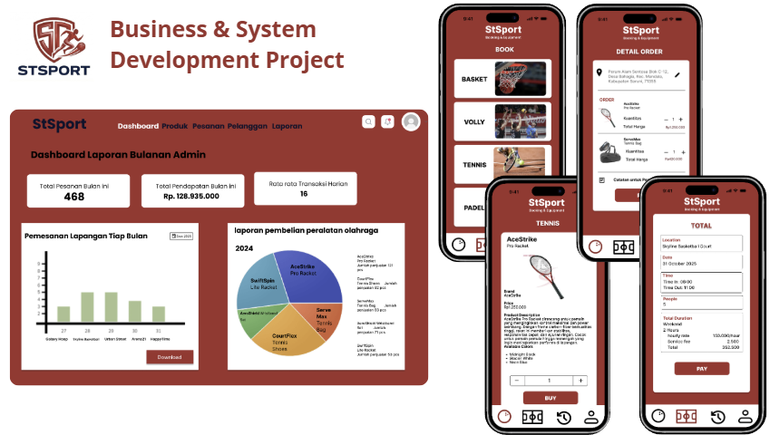
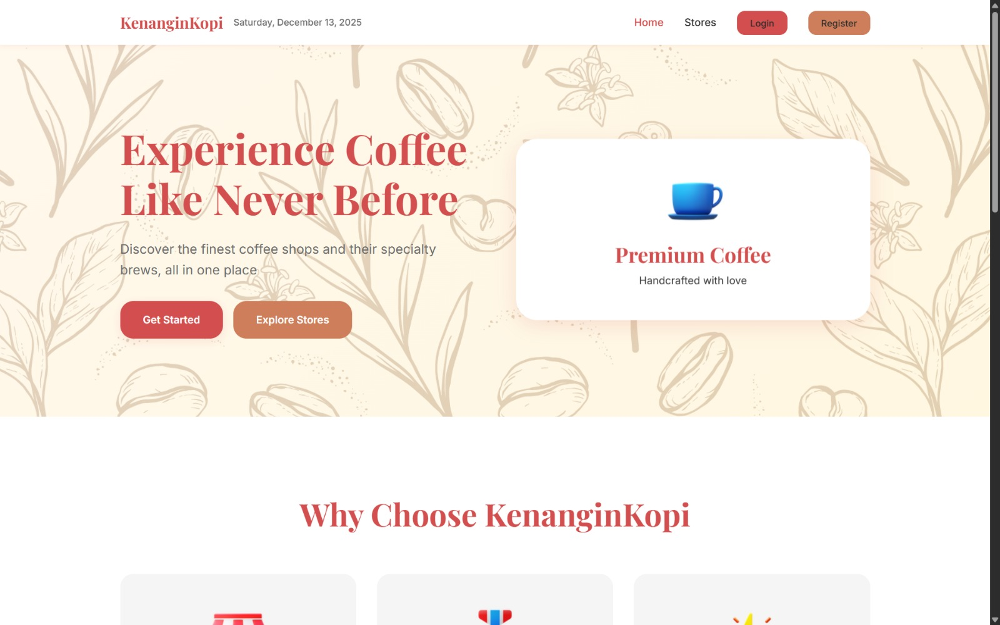
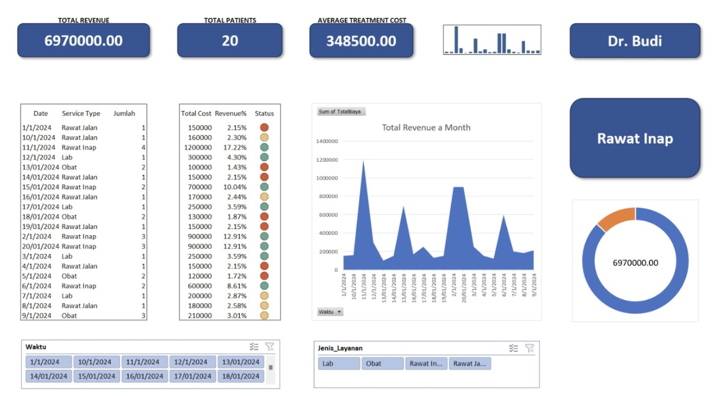
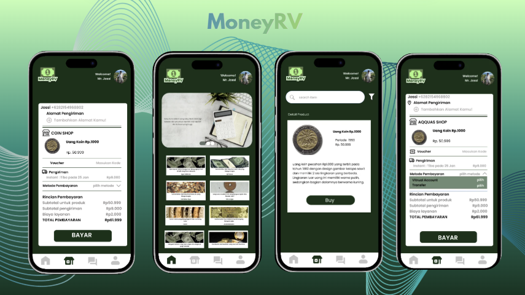
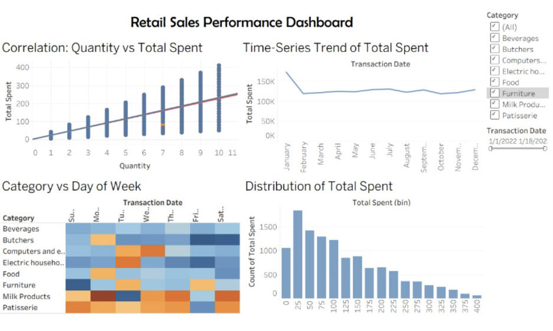
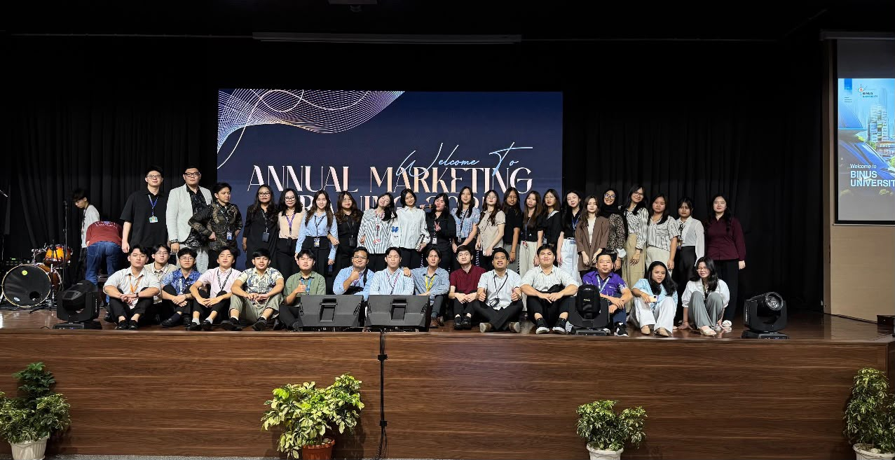
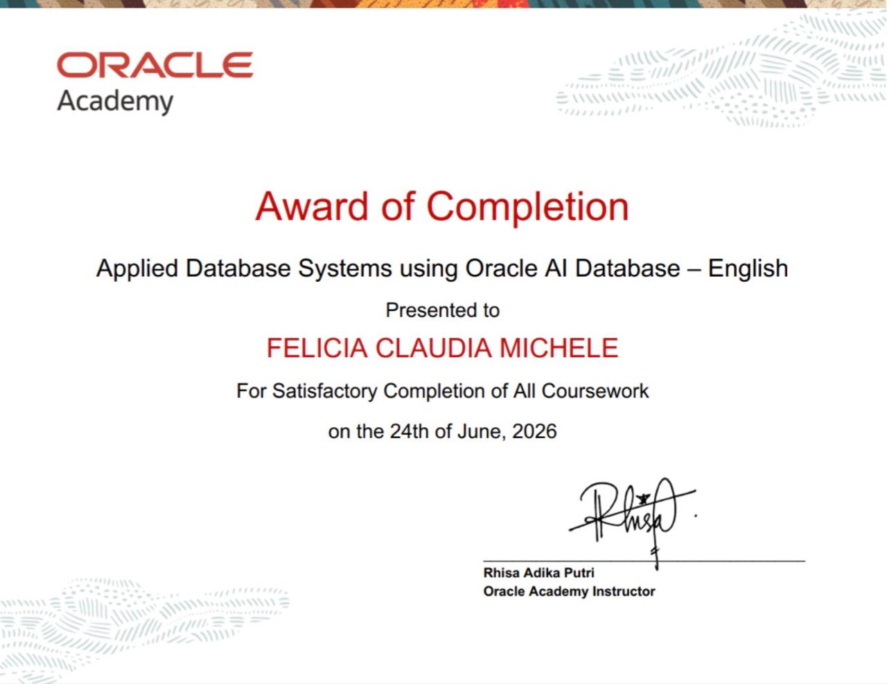
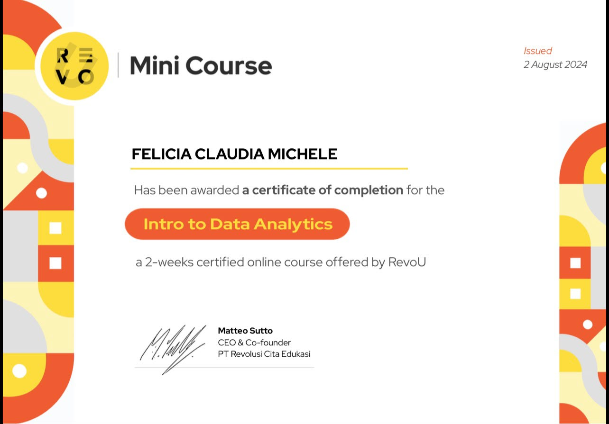
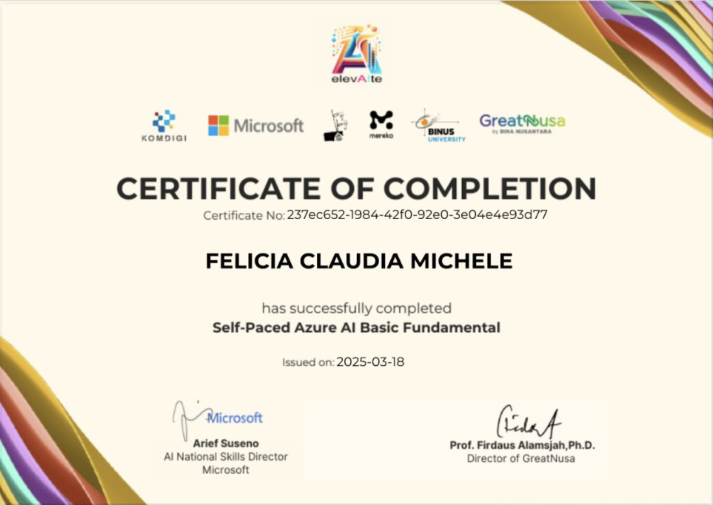
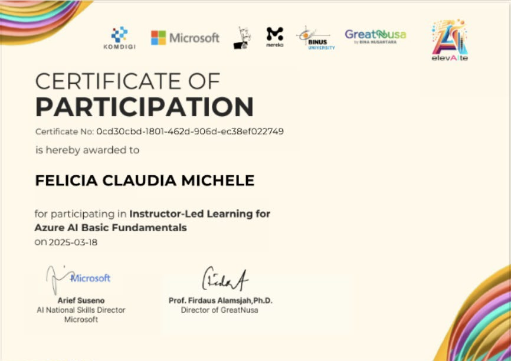

Business & Systems
Analyzing business processes, documenting requirements, and designing information systems.
INFORMATION SYSTEMS STUDENT · BINUS UNIVERSITY
I'm Felicia Claudia Michele, an Information Systems student passionate about understanding business needs, designing practical systems, and turning data into meaningful insights.
BUSINESS ANALYSIS · DATA ANALYTICS · SYSTEM DESIGN
01 / ABOUT ME
I am an Information Systems student at BINUS University who enjoys connecting business processes, people, and technology.
Through academic projects, I have explored system analysis, database design, UI/UX, and data visualization. I also bring communication and teamwork experience from my part-time role in university marketing and involvement in student organizations.
02 / MY TOOLKIT
Analytical, technical, and collaborative skills developed through academic projects, professional experience, and organizational activities.
Analyzing business processes, documenting requirements, and designing information systems.
Preparing datasets, developing dashboards, managing databases, and building web applications.
Communicating with stakeholders, collaborating with teams, presenting ideas, and designing user-friendly digital experiences.
03 / SELECTED WORK
Academic work spanning system development, UI/UX, and data visualization.

Designed a sports business concept from the initial idea to system documentation and UI/UX. Developed SWOT analysis, ERD, context diagrams, and state transition diagrams. The proposed platform supports volleyball, basketball, tennis, and padel court bookings, sports equipment purchases, and an admin dashboard.

Developed a coffee-themed website as a final project for Programming for Business, focusing on website structure, presentation, and the digital customer experience.

Created an interactive dashboard to present hospital-related data in a clear visual format, making patterns and key metrics easier to explore and understand.

Designed mobile application interface screens with attention to layout, navigation, and a consistent visual experience.

Cleaned and prepared a retail dataset using Microsoft Excel, then built a Tableau dashboard to visualize sales performance, spending patterns, and category insights.
04 / EXPERIENCE
Professional experience and organizational involvement that strengthened my communication, problem-solving, and collaboration skills.

BINUS University | Part-Time
Worked as part of the BINUS University Marketing Team, supporting student recruitment, promotional activities, and prospective student engagement.
Managed, organized, and updated prospective student data using Microsoft Excel and Salesforce CRM to maintain accurate records and support marketing operations.
Communicated directly with prospective students and their parents to provide information about academic programs, admission requirements, and university opportunities.
Provided personalized program recommendations based on students' interests and academic goals, helping them explore suitable study options and make informed decisions.
Conducted follow-ups with prospective students, answered admission-related inquiries, and assisted applicants throughout the university registration and enrollment process.
BINUS University | Event & Human Resources Intern
Involved in Keluarga Mahasiswa Katolik (KMK) at BINUS University, participating in a student organization intern that encourages collaboration, community engagement, and personal development.
Developed interpersonal communication, teamwork, and organizational skills through involvement in student activities and collaboration with fellow members.
Gained valuable experience in working with people from different backgrounds, building relationships, and contributing to a supportive campus community.
05 / EDUCATION
Information Systems
Academic focus: systems analysis and design, databases, data modeling, and project management.
06 / CERTIFICATIONS
Certificates and courses from my ongoing learning journey.

Oracle Academy · Award of Completion

RevoU · Mini Course

Self-Paced Learning · Completion

Instructor-Led Learning · Participation
07 / GET IN TOUCH
Interested in connecting about business analysis, information systems, or internship opportunities? I'd love to hear from you.